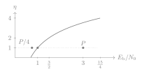

Seminar 9. Power, bandwidth and capacity
The seven questions of the session, each with three options and one correct answer. Work out your answer before opening a solution.
Consider an OFDM system that transmits at R_{\rm b}=4 Mbit/s with passband bandwidth W=4 MHz and received power P=1.2\cdot10^{-13} W, over the AWGN channel with \No=10^{-20} J. Recall that capacity questions allow any modulation and code, and that reliable transmission means a vanishing error probability.
Question 1. What is the signal-to-noise ratio? Calculate the channel capacity in bits per second and compare it with the bit rate R_{\rm b}.
(a) 4.
(b) 3.
(c) 6.
Show solution
The correct answer is (b) ★
The noise power is \No W=10^{-20}\cdot4\cdot10^6=4\cdot10^{-14} W. By equation (6.1) of Topic 6, \begin{equation*} \snr=\frac{P}{\No W}=\frac{1.2\cdot10^{-13}}{4\cdot10^{-14}}=3. \end{equation*} By Theorem 6.1 of Topic 6, \begin{equation*} C=W\log_2(1+\snr)=4\cdot10^6\log_2 4=8\text{ Mbit/s}. \end{equation*} The bit rate 4 Mbit/s is below the capacity, so reliable transmission is possible with a suitable modulation and code. The answer is (b).
Question 2. What received power gives C=R_{\rm b}? Find the corresponding signal-to-noise ratio first.
(a) 4\cdot10^{-14}.
(b) 8\cdot10^{-14}.
(c) 1.2\cdot10^{-13}.
Show solution
The correct answer is (a) ★
Setting C=R_{\rm b} in Theorem 6.1 of Topic 6 gives \begin{equation*} \frac{R_{\rm b}}{W}=1=\log_2(1+\snr). \end{equation*} Thus \snr=2^1-1=1 and P=\No W=4\cdot10^{-14} watts. Reliable transmission at 4 Mbit/s requires a power above this value. The answer is (a).
Question 3. What is the capacity when the power becomes \tfrac73P, keeping the bandwidth fixed? Also calculate the capacity when the bandwidth triples, keeping the original power, and compare the two cases.
(a) \tfrac{56}3 Mbit/s.
(b) 8 Mbit/s.
(c) 12 Mbit/s.
Show solution
The correct answer is (c) ★
With power \tfrac73P, \snr=7, so by Theorem 6.1 of Topic 6, \begin{equation*} C=4\cdot10^6\log_2(1+7)=12\text{ Mbit/s}. \end{equation*} With three times the bandwidth and the original power, the noise power triples and \snr=1. Therefore, \begin{equation*} C=12\cdot10^6\log_2(1+1)=12\text{ Mbit/s}. \end{equation*} Both changes give the same capacity, using different combinations of power and bandwidth. The answer is (c).
Question 4. With the received power fixed, what does the capacity tend to as the bandwidth tends to infinity?
(a) It grows without bound.
(b) 12\log_2 e Mbit/s.
(c) 12 Mbit/s.
Show solution
The correct answer is (b) ★
By equation (6.6) of Topic 6, \begin{equation*} C_\infty=\frac{P}{\No}\log_2e=12\cdot10^6\log_2e\text{ bit/s}. \end{equation*} At fixed power, increasing bandwidth lowers the SNR. The capacity increases towards this finite limit, as in Figure 6.1. The answer is (b).
Question 5. Calculate \Eb/\No and the spectral efficiency \eta. What is the ratio of the \Eb/\No of the system to the lower bound on \Eb/\No for reliable transmission at this efficiency?
(a) 3.
(b) 6.
(c) \tfrac32.
Show solution
The correct answer is (a) ★
By equation (5.2) of Topic 5, \Eb=P/R_{\rm b}=3\cdot10^{-20} J, so \Eb/\No=3. The spectral efficiency is \eta=R_{\rm b}/W=1 bit/s/Hz. By Proposition 6.4, the bound is \begin{equation*} \frac{2^\eta-1}{\eta}=\frac{2^1-1}{1}=1. \end{equation*} The ratio is 3. Since \Eb=P/R_{\rm b}, this is also the ratio of the original power to the power found in question 2. The answer is (a).
Question 6. Draw the capacity boundary in the plane of spectral efficiency \eta (vertical axis) versus \Eb/\No (horizontal axis), with both axes linear, for 0<\eta\leq4. Mark the system’s operating points with the original power and with one quarter of that power, keeping R_{\rm b} and W fixed. In which case is reliable transmission possible?
(a) With both powers.
(b) With neither power.
(c) With the original power only.
Show solution
The correct answer is (c) ★
By Proposition 6.4, the boundary is \begin{equation*} \frac{\Eb}{\No}=\frac{2^\eta-1}{\eta}. \end{equation*} It passes through (1,1), (\tfrac32,2) and (\tfrac{15}4,4) in the (\Eb/\No,\eta) plane. By question 5, the original point is (3,1). Since \Eb=P/R_{\rm b}, reducing the power by a factor of four moves it to (\tfrac34,1), at the same spectral efficiency.

At \eta=1, reliable transmission requires \Eb/\No>1. The original point is to the right of the boundary, whereas the quarter-power point is to its left. Reliable transmission at this bit rate and bandwidth is therefore possible only with the original power. The answer is (c).
Question 7. The bit rate stays at R_{\rm b}=4 Mbit/s while the bandwidth tends to infinity, W\to\infty. Calculate the limiting power P_\infty for which C=R_{\rm b}. What is P_\infty/P, where P is the original received power? Compare P_\infty with the power found in question 2.
(a) \ln2.
(b) \tfrac{\ln2}{3}.
(c) \tfrac{1}{3\ln2}.
Show solution
The correct answer is (b) ★
As the bandwidth grows at fixed bit rate, \eta=R_{\rm b}/W tends to zero. By Proposition 6.4, the bound on \Eb/\No tends to \ln2. Since P=\Eb R_{\rm b}, the limiting power is \begin{equation*} P_\infty=\No R_{\rm b}\ln2=4\ln2\cdot10^{-14}\text{ W}. \end{equation*} Dividing by the original received power gives \begin{equation*} \frac{P_\infty}{P} =\frac{4\ln2\cdot10^{-14}}{1.2\cdot10^{-13}} =\frac{\ln2}{3}. \end{equation*} Since \ln2<1, the limiting power is below the 4\cdot10^{-14} W found for 4 MHz in question 2. Reliable transmission requires power above this limit, however large the bandwidth. The answer is (b).